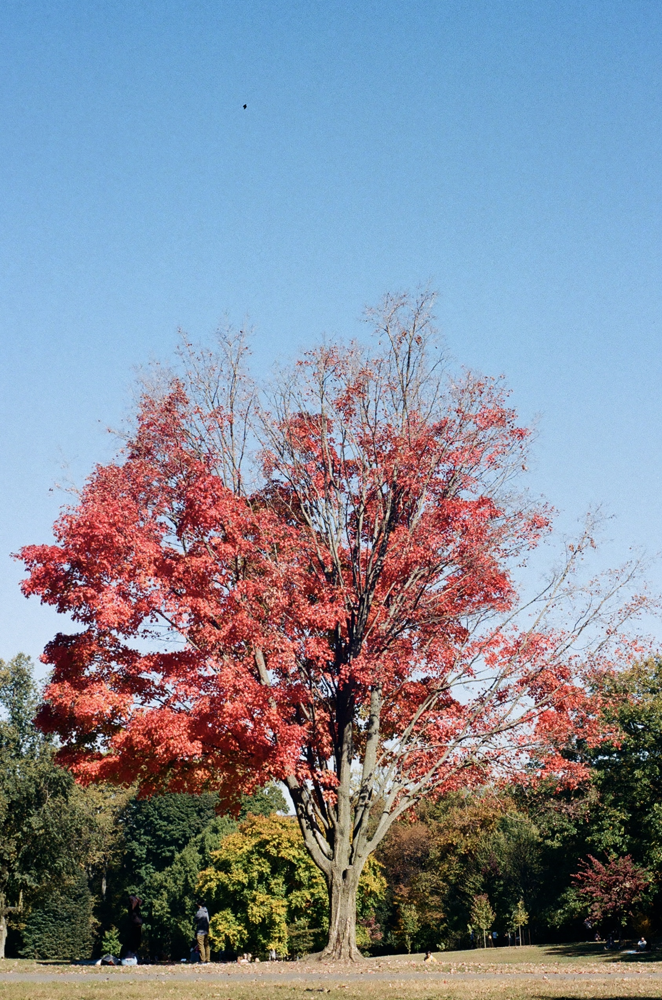

Sugar Maple

There are many kinds of maple trees in NYC, but the sugar maple is arguably the most iconic!
Here are some fun facts about sugar maple trees:
- Sugar maples are the primary source of maple syrup.
- Sugar maples have a tendency to color unevenly in autumn.
- More U.S. states have claimed the sugar maple as their state tree than any other tree species!
Sources:
Arbor Day Foundation. “Sugar Maple.” Accessed October 26, 2025. https://shop.arborday.org/sugar-maple.
NYC Parks. “Sugar Maple Trees in NYC.” Accessed October 26, 2025. https://tree-map.nycgovparks.org/tree-map/species/824.